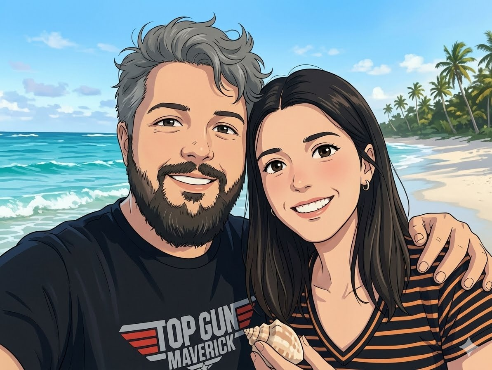
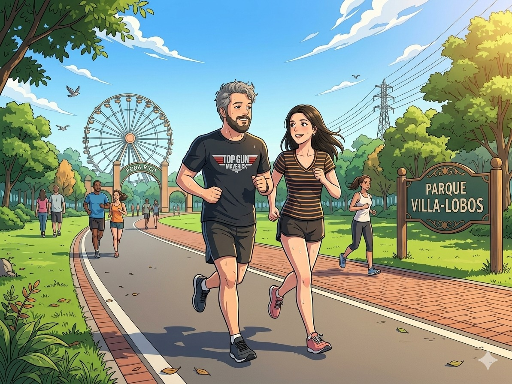
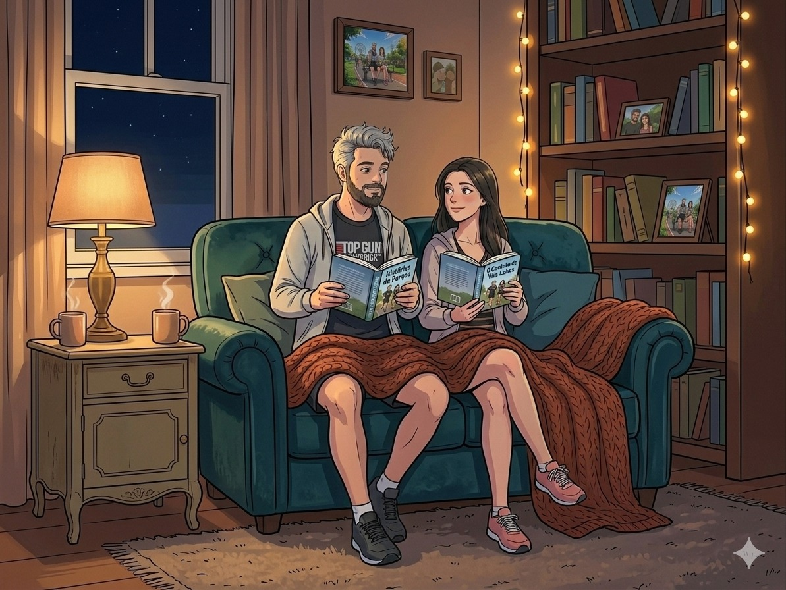
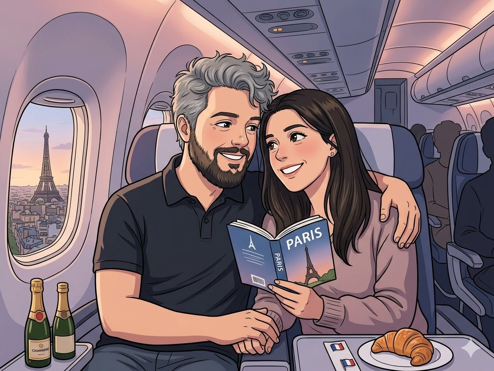
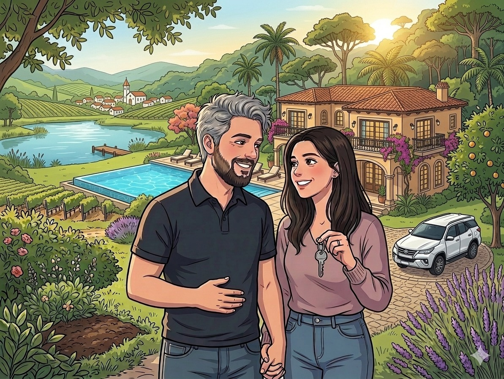
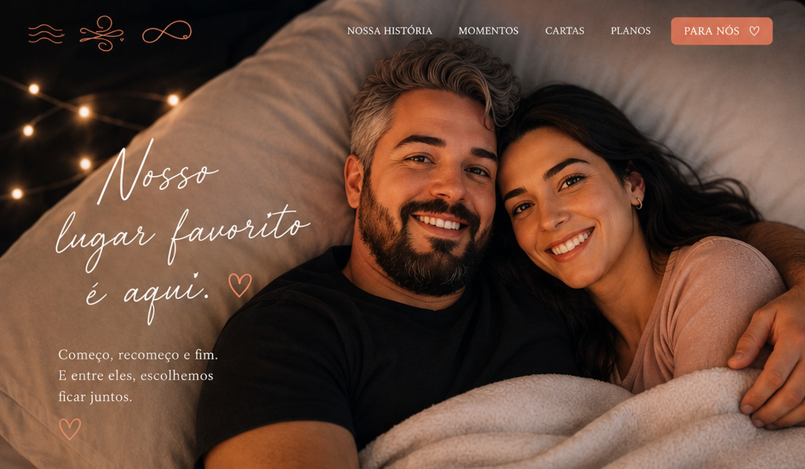

Começo ♡
O início de um sonho.
Começo, recomeço e fim. Entre todos eles, continuamos escolhendo ficar juntos.
Ver nossa história ♡O início de um sonho.
A coragem de tentar de novo.
O fim que nos leva a um novo começo.
Não é feita apenas de grandes acontecimentos, mas de todas as vezes em que a vida mudou e ainda assim escolhemos continuar lado a lado.

O primeiro olhar, o primeiro sorriso e tudo o que começou sem pedir licença.

A vida muda, os planos mudam, mas a escolha de continuar permanece.

Um sofá, uma conversa, uma noite tranquila e a sensação de estar em casa.

Mais longe ou mais perto, todo lugar fica especial quando estamos juntos.

Uma vida leve, com sonhos, propósito, cumplicidade e amor.
“Nosso amor é feito de ciclos, e cada ciclo nos escolhe de novo.”
Talvez amar seja exatamente isso: começar com esperança, recomeçar com coragem e entender que certos fins existem apenas para abrir espaço para uma nova versão de nós.
Em cada fase, em cada dificuldade e em cada conquista, o meu lugar favorito continua sendo ao seu lado.

Que a nossa história continue sendo escrita sem pressa, com verdade e com a certeza de que nenhuma fase precisa ser perfeita para ser inesquecível.